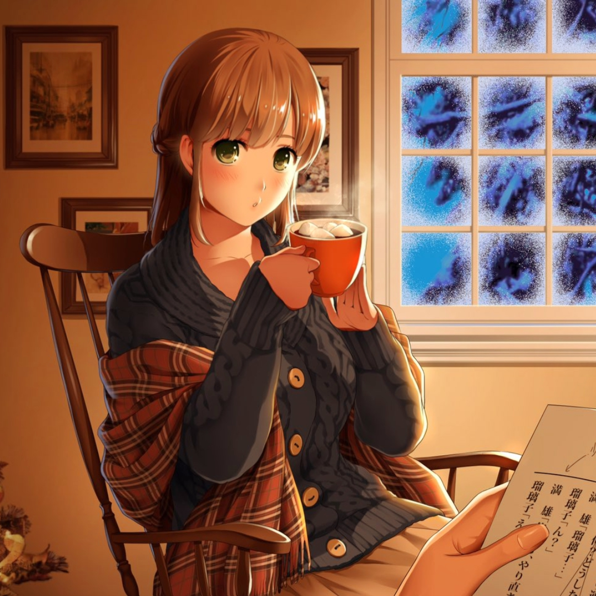

Gilgamesh
May 25, 2020
Autumn.
The season of the golden crisps had finally arrived. Campus smelled distinctly of pumpkin spice latte, emanating from the stands of the baseball field outside of New Vassar as students practiced on the grass. Students and professors alike rejoiced in the pristine air in their first semester back at college since the coronavirus scare earlier in the year. President Reif had been hesitant to announce whether fall semester would be on-campus—everyone was understandably relieved when the news came through.
Everyone, except me.
I hated going to class. I hated waking up at 8:30 in the morning, the feeling of 10G's of gravity on my eyelids dragging them back to the mattress. I hated rushing through my shower, brushing, shaving, and breakfast, all in the thirty minutes before class. And I hated that I could never wake up for running club (7:30 at the Z-Center on Monday, Wednesday, and Friday mornings), as much as I loved Lara and all her jokes which somehow always managed to slightly miss the mark. Admittedly, that part of her was pretty charming.
But what I hated even more was going to office hours. This semester, I had taken the class 6.172 Performance Engineering. A friend, Endrias, had convinced me to take it—citing it as the best class he had ever taken at MIT.
Evidently, Endrias was quite the masochist.
I hadn't struggled in many classes in the past, but 6.172 was different. I could never stay awake in class. Having spent minimal time on the first of four projects, letting my partner do all the work, I found myself completely lost when the second project came out. What were we supposed to implement again? Something about stabbing lines into each other…
The morning of November 14th, as I blinked awake, I was met with the darkest nightmare of my life. To figure out project two, I needed to ask for help at office hours.
"Oh my," she sighed, "this won't do…"
It really wouldn't. I had painstakingly optimized my intersection detection algorithm, inlining almost all the functions I could see and minimizing any repeat computations in the huge code-base that the staff had given us. But it still wasn't fast enough. Taking around 10 seconds to run, the project was as slow as Deneb's trail across the sky above the northern hemisphere at the end of summer. It was nowhere close to the 2 seconds that all the other teams were getting.
"Are you working with anybody on the project?" Her mouth formed a perfect "O" shape, like in the big-O notation. Her breath was slightly minty.
"N-no… I didn't get along well with my project partner, so we ended up separating after the beta submission," I said, ashamed. Team projects were difficult, and my previous partner had only been free during Friday nights. But anime club had always been held on Friday nights as well (7:00 in room 3-133)—how could I have abandoned perhaps my only friend, the anime club president, Tony, to run the club by himself? Alas, the 6.172 collaboration was never meant to be.
"Oh no… I'm so sorry to hear that! Studying alone is really difficult," she empathized.
The TAs at office hours were quite nerveracking. They loomed over me, their presence like a whale about to swallow the school of minnows which were my C++ code. Please, let the lambdas and function templates live, the minnows begged. But it was to no avail. Against the tide of course staff adherence to classical C conventions, even snake_case naming, more functional constraints were no match. Every minute I spent in office hours, I spent daydreaming about Typescript. Even the TA with the dyed hair was a little intimidating. But she was different.
Hina Tachibana. Of course. That was her name. Hina, with her green eyes and brunette long hair, and a gray turtleneck sweater to boot, was a fireplace amidst the blizzard. The sweater was a perfect match for her motherly aura, warm, comfortable, and soft, just like her eyes, a glossy sand dune, the delicate child of mother nature as her hands shaped the clay of pre-civilization first into beauty, then into kindness, and finally into Hina. She was perfect.
"Hello? Hello…" she whispered into my ear, her voice so close I felt her vitality travel through all 26 bones of my vertebral column. I sprung back into present-day.
"I know it must be hard for you, having to do this project all by yourself. Oh! How about this," Hina exclaimed as she lifted her right index finger. I could practically see the light bulb light up right above her glossy brown nails. "Let's work together on Saturday night! I'll make sure you finish!"
She winked. It was a wink that stuck with me all the way until Saturday night, a wink that I swear could have cured AIDS, had I had better grades in my organic chemistry class.
"Who cares about quad-trees," I lamented, "I just want to experience the college life. Really, Hina, lazily-updated seg-trees were enough." The final part of the project was to implement quad-tree updates to speed up line intersection detection by bypassing the need to reconstruct the quad-tree at each time step.
Finally, Saturday night had come. I had trekked across campus to arrive at her cozy single on dormitory row. Sitting right beside me, Hina's reflective green eyes drifted up towards the ceiling, the light from her desk lamp blazing a path around her pupil like the sun on a hot day in the desert. Instinctively, I met her gaze upon her ceiling, a white drywall colored like the orange sunset by the warmness of her presence as it seemed to diffuse into the air through the steam from her cup of hot chocolate. Her room was a welcome repose from the cold outside.

[1]
"And what do you want to be a part of your college experience, Gil?"
I didn't know what to answer. Classes, research, or sports? My college years had left me jaded. I didn't feel like there was anything left to look forward to.
"Oh, I don't know… I wish I could care more about classes or clubs, but they're just not interesting to me. I've met some pretty cool people here, though, so perhaps part of it is making friends, or something more." Once again, I lost myself in her aquamarine eyes as she shifted her gaze back to me.
"Something more?" Hina's sweater was different from the turtleneck she donned days before. It was a cut lower, revealing just enough skin around her collarbones to be attractive but not seductive. It was held together by big brown buttons at the front, seemingly hand-woven, evidenced by the larger holes in the fabric of the sweater.
"Something… like love, I guess," I stuttered. Flushed, perhaps from the warmth of her room, I turned my attention back to the mess on my laptop screen and hacked out a few lines. I was so close to finishing the project.
Slowly, I felt her hair graze my neck; a tickle, as playful, as innocent, as a boy and a girl playing doctor together. She placed her tender fingers upon mine, guiding them, rubbing them up and down on my Microsoft© Windows Precision Touchpad as her eyes massaged themselves over my code.
"Oh my, oh my…" she whispered, the softest of whispers, as a siren would sing to Odysseus, as Circe would entrance his men. "You're so close to finishing, aren't you, dear…"
It was then that I became aware of how thin, how simple her sweater was, the only obstacle in my eye's path to her body. Hina knew, had known, that I was watching, waiting for glimpses of her nakedness through the hand-woven holes of her black sweater her grandmother must have crafted for her.
"If your program can run in under 2 seconds, I'll give you a reward," she giggled, pretending not to notice as her sweater loosened around her shoulders. My fingers raced across the keyboard, hastily searching for the -ffast-math compiler flag to parallelize floating-pointer operations. Hina fingered the run command herself. And… aha! I was finally done.
Breasts scarcely covered now, her right hand brushed long, sensual hair behind shaped ears as she leaned in, her lips glistening wet against the warm glow, an oasis amidst the blizzard now brewing outside. I relinquished, a flow of euphoria through my veins as I, too, closed my eyes and lifted my hands from the keyboard to comply with her desire for the rest of our night together.
No additional quad-trees were constructed that night.